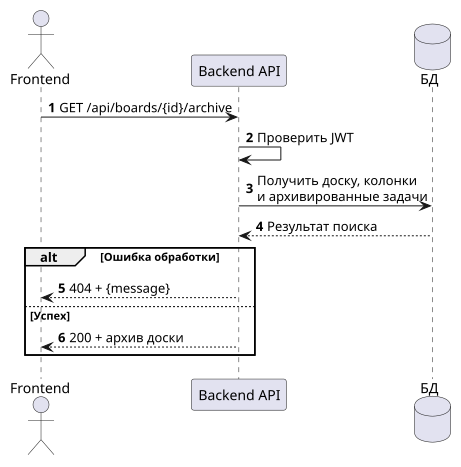

Возвращает список архивированных задач доски с названиями колонок.
Доступ: JWT.
Используется в UC-8. Архивирование и восстановление задачи.
Схема работы


Алгоритм
Проверить JWT и найти доску по идентификатору.
Загрузить колонки доски и выбрать задачи с
isArchived=true.Сформировать список архивированных задач с названиями колонок.
Вернуть объект архива.
Входные параметры
Параметр пути (PATH). Тело запроса и QUERY-параметры отсутствуют.
Где | Поле | Тип | Обязательно | Описание |
|---|---|---|---|---|
PATH |
| integer | Да | Идентификатор доски |
Ответ
200 OK: возвращает объект со сведениями об архиве доски.
Поле | Тип | Описание |
|---|---|---|
| integer | Идентификатор доски |
| string | Название доски |
| array | Список архивированных задач |
Элементы массива archivedTasks:
Поле | Тип | Описание |
|---|---|---|
| integer | Идентификатор задачи |
| string | Название задачи |
| string | Название колонки задачи |
Если архивированных задач нет, поле archivedTasks содержит пустой массив [].
Ошибки
Код | Причина | Ответ |
|---|---|---|
404 | Доска не найдена или возникло исключение при обработке запроса |
|
Контроллер возвращает 404 при любом перехваченном исключении, а не только при отсутствии доски.
Особенности
Для чтения архива достаточно JWT. При этом кнопка просмотра архива в интерфейсе дополнительно проверяет право kanban:archive_card.
Пример запроса
GET /api/boards/101/archive
Пример ответа
{
"id": 101,
"title": "Испытательный проект",
"archivedTasks": [
{
"id": 25,
"title": "Подготовить техническую документацию",
"columnName": "Done"
}
]
}